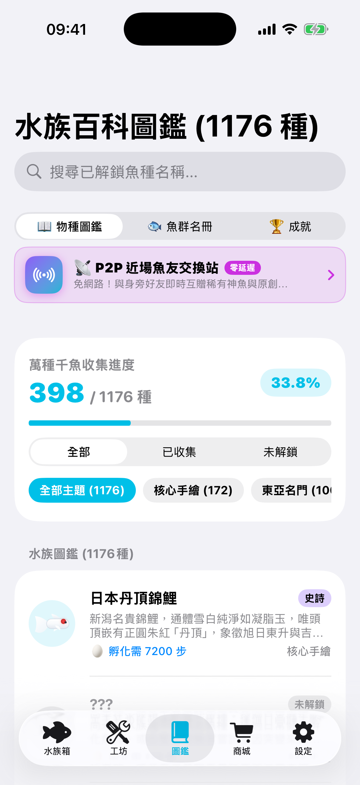

TinyAquarium（微型水族箱） 是一款專為都市生活打造的放置水族養成手遊。走路解鎖真實與傳說神魚、探索百種隱藏基因突變、在 Lo-Fi 水聲白噪音中沉浸專注，並透過 Apple Watch 與桌面小組件隨時投餵守護。

點擊魚缸任意位置進行 投餵 (Feed 🦐)，點擊游動的魚兒觸發 摸摸互動 (Pet ❤️)，還能隨時切換水體氛圍光效！
將健康計步、遺傳基因合成、沉浸專注與去中心化近場社交完美融為一體。
成年親代雙魚進入繁育實驗室，消耗愛心能量觸發隱藏突變配方，全部 146 組配方詳見攻略「隱藏配方大全」。
內建《陽光踏青》《迷霧探索》《海島度假木琴》等 15 首原創聲學黑膠（14 首演算法合成 + 1 首鋼琴）。支援 15 / 25 / 45 分鐘專注番茄鐘，專注時水族箱進入平靜模式，助你高效率工作與入眠。
包含 172 種核心旗艦手繪名門，以及東亞江戶、亞馬遜熱帶、非洲大湖、大堡礁、萬米深淵、史前海怪、山海經神話、塔羅星宿至甜點節慶 10 大主題卷冊！
不必每次都解鎖進入 App。無論是瞥一眼手機桌面，或是隨時查看鎖定畫面，水族箱的靈動生命都在陪伴著你。
智慧融合 Apple Watch 與 iPhone 健康步數，日常走路每一步都無縫加速多卵溫室孵化破殼。
支援 iOS 17 互動式小組件（一鍵桌面快速投餵）、實時展示孵化魚卵步數進度與水族動態。
在 iPhone 上培育出的神魚與解鎖飾品，登入相同 Apple ID 立即無縫同步，無須手動備份。
「以前總覺得走路運動很枯燥，自從裝了 TinyAquarium，每天通勤下班都想多走兩站，只為了快點把那顆神話級魚卵孵出來！」
「Lo-Fi 專注模式的水聲真的太舒服了！寫代碼焦慮時，打開水族箱看著小魚擺尾，心情立刻就平靜下來，沒有任何垃圾廣告。」
「基因突變繁育系統超有深度！跟朋友用近場交換到了彼此缺少的魚種，居然合成出了傳說中的十二紅頂金魚，超有成就感！」
免費下載 TinyAquarium，在每一步的步伐中，遇見屬於你的傳奇神魚。